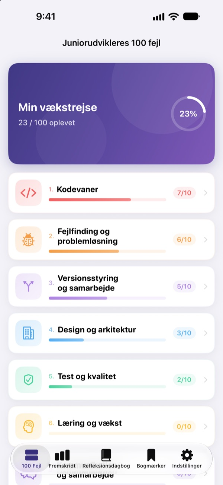
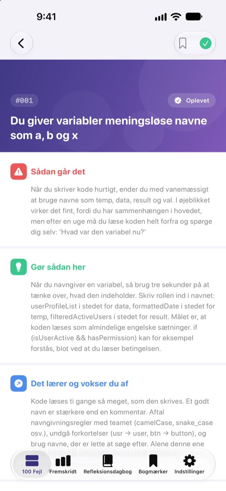
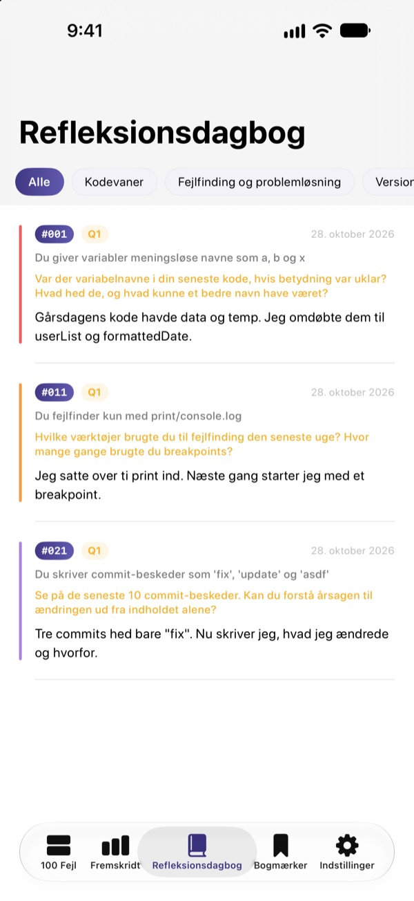
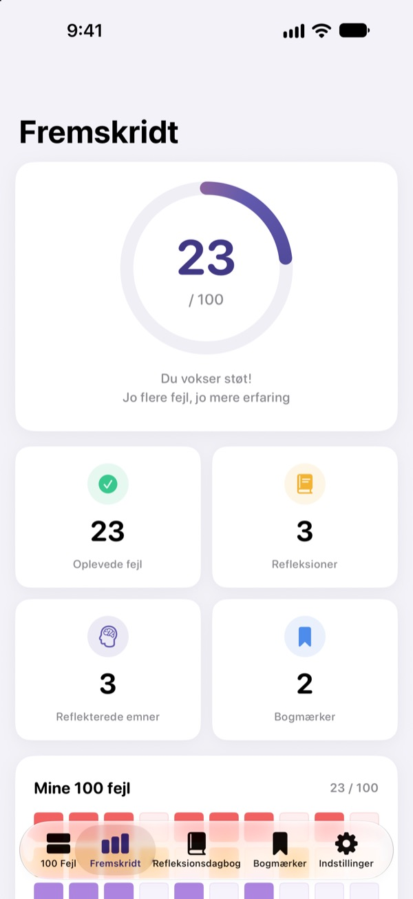

Kend fejlene,
før de gør ondt
De 100 fejl, nye udviklere oftest begår, samlet ét sted. For hver fejl læser du, hvad der sker, hvad du skal gøre, og hvad du lærer, og så besvarer du et refleksionsspørgsmål, så du ikke laver den samme fejl to gange.
De første 30 fejl er gratis. Til iPhone, iPad og Mac.

Åbn en fejl
Her er de 10 fejl i den første gratis kategori, ord for ord som i appen. Markér dem, du allerede har oplevet, som Oplevet.
Den samme kommentar i code review igen?
Kryptiske variabelnavne, funktioner på 200 linjer, kopieret kode. Alle seniorer har prøvet det, men man opdager det som regel først, når man selv falder i. 100 Fejl viser dig fejlene på forhånd og får dig til at reflektere over dit eget arbejde, så du ikke gentager dem.
Hvad sker der, hvad gør du, hvad lærer du
Hver fejl er delt i tre: hvad der sker, hvad du skal gøre, og hvad du lærer af den.
Ti kategorier fra kodevaner til sikkerhed og ydeevne, kun med fejl, der går igen og igen i rigtige teams.

Refleksionsspørgsmål, så det sidder fast
Hver fejl har 4 refleksionsspørgsmål, 400 i alt. Svar med dine egne projekter i tankerne, så bliver det, du læser, til erfaring.
Dine svar samles i refleksionsdagbogen efter kategori, klar til at blive genlæst.

Se, hvor langt du er nået
Sæt flueben ved de fejl, du har oplevet, og dine fremskridt vokser pr. kategori og samlet. Gem et bogmærke ved det, du vil vende tilbage til.
Alt synkroniseres via iCloud mellem iPhone, iPad og Mac.

Tre trin, så er du i gang
- 1
Vælg en kategori
Kodevaner, fejlfinding og versionsstyring er åbne gratis.
- 2
Læs og sæt flueben
Tryk på Oplevet ved de fejl, du selv har lavet.
- 3
Reflektér
Skriv et svar, også bare et kort. Det havner i din refleksionsdagbog.
De 10 kategorier
- Kodevaner
- #001–#010 · Gratis
- Fejlfinding og problemløsning
- #011–#020 · Gratis
- Versionsstyring og samarbejde
- #021–#030 · Gratis
- Design og arkitektur
- #031–#040 · PRO
- Test og kvalitet
- #041–#050 · PRO
- Læring og vækst
- #051–#060 · PRO
- Kommunikation og samarbejde
- #061–#070 · PRO
- Udrulning og drift
- #071–#080 · PRO
- Sikkerhed og data
- #081–#090 · PRO
- Ydeevne og optimering
- #091–#100 · PRO
Hver kategori har 10 fejl, og hver fejl har 4 refleksionsspørgsmål.
30 gratis. Alle 100 med PRO.
Gratis
- De første 3 kategorier, 30 fejl
- Deres 120 refleksionsspørgsmål
- Tjekliste, refleksionsdagbog, fremskridt og bogmærker
- iCloud-synkronisering (iPhone, iPad, Mac)
100 Fejl PRO
- De andre 7 kategorier, 70 fejl mere (#031–#100)
- 280 refleksionsspørgsmål mere
- Alle fremtidige indholdsopdateringer
Månedligt, årligt (op til 50 % billigere end månedligt) eller et engangskøb for altid.
Ingen indsamling af personoplysninger, ingen analyseværktøjer og ingen reklamer.
Ofte stillede spørgsmål
Hvad er gratis?
Alle 30 fejl og deres spørgsmål i kategorierne Kodevaner, Fejlfinding og problemløsning samt Versionsstyring og samarbejde. Tjeklisten, refleksionsdagbogen, fremskridt, bogmærker og iCloud-synkronisering er også gratis.
Hvordan bruger jeg PRO på en anden enhed?
Log ind med samme Apple-id, og tryk på Gendan køb på abonnementsskærmen.
Hvordan opsiger jeg abonnementet?
Når som helst under Indstillinger › Apple-id › Abonnementer. Abonnementet fornyes automatisk, medmindre du opsiger det mindst 24 timer før den aktuelle periode slutter. Køb for altid betales kun én gang.
Mine data synkroniseres ikke mellem enheder.
Tjek, at alle enheder er logget ind på iCloud med samme Apple-id, og at iCloud er slået til for appen i Indstillinger. Synkronisering kræver også netværksforbindelse.
Hvordan sletter jeg det hele?
Tryk på Nulstil alle data i appens indstillinger. Flueben, svar og bogmærker slettes, og det kan ikke fortrydes.
Hvilke enheder virker den på?
iPhone, iPad og Mac. PRO låses op på alle enheder med samme Apple-id.
Bliver mine data sendt nogen steder hen?
Nej. Dine flueben og svar gemmes kun på dine enheder og i din egen iCloud. Appen indsamler ingen personoplysninger og har hverken analyseværktøjer eller reklamer.
Spørgsmål eller forslag? Skriv til leeo@kakao.com.